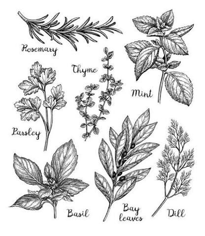
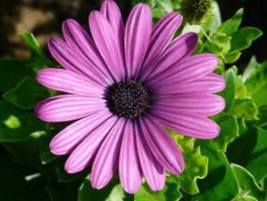

| INICIO | PLANTAS | TIPOS | CUIDADOS |
|---|
Medicinales |
Descripción
Las plantas medicinales son especies vegetales que contienen sustancias naturales utilizadas tradicionalmente para aliviar algunos malestares y contribuir al cuidado de la salud. Su uso forma parte de los conocimientos transmitidos de generación en generación. ¿Para qué se utilizan?Se utilizan principalmente para aliviar molestias leves, favorecer la digestión, ayudar a la relajación, cuidar la piel y complementar algunas prácticas tradicionales de salud. Parte utilizada: Dependiendo de la planta, se pueden utilizar hojas, flores, raíces, tallos, frutos, semillas, cortezas o geles.Importancia: Son importantes porque forman parte de la medicina tradicional y de la cultura de muchas comunidades. También ayudan a conocer y valorar la biodiversidad, pueden cultivarse en huertos y permiten aprender sobre los beneficios y características de diferentes plantas. Su uso debe ser responsable, ya que algunas pueden producir efectos adversos. |
Ornamentales |
Descripción
Las plantas ornamentales son aquellas que se cultivan principalmente por su belleza, colores, formas, aromas y apariencia, con el propósito de decorar y embellecer espacios como jardines, parques, hogares y escuelas. ¿Para qué se utilizan?Se utilizan principalmente para decorar y mejorar la apariencia de diferentes lugares. También pueden ayudar a crear ambientes agradables y aportar vegetación a los espacios. Parte utilizada: Las partes que más destacan son las flores, hojas, tallos y frutos, dependiendo de la especie y de la característica que se quiera apreciar.Importancia: Son importantes porque embellecen los espacios, contribuyen a mejorar el ambiente y favorecen la presencia de vegetación. Además, algunas plantas ornamentales pueden atraer insectos polinizadores y ayudar a mantener la biodiversidad. |
Hortalizas |
Descripción
Las hortalizas y vegetales son plantas que se cultivan principalmente para el consumo humano. Aportan nutrientes importantes como vitaminas, minerales, fibra y agua, y forman parte de una alimentación variada y equilibrada. ¿Para qué se utilizan?Se utilizan principalmente como alimentos y pueden consumirse crudos o preparados de diferentes maneras, como en ensaladas, sopas, guisos y otros platos. Parte utilizada: Dependiendo de la planta, se pueden consumir raíces, hojas, tallos, flores, frutos, semillas o bulbos. Por ejemplo, en la zanahoria se utiliza la raíz y en la lechuga las hojas.Importancia: Son importantes porque aportan nutrientes necesarios para el organismo, forman parte de una alimentación saludable y son fundamentales para la agricultura y la producción de alimentos. Además, cultivarlas en un huerto permite aprender sobre el cuidado de las plantas y valorar la producción de alimentos. |
Frutales |
Descripción
Las plantas frutales son aquellas que producen frutos que pueden ser consumidos por las personas y otros seres vivos. Se cultivan principalmente por el valor alimenticio de sus frutos. ¿Para qué se utilizan?Se utilizan principalmente para producir frutas, que pueden consumirse frescas o utilizarse para preparar jugos, postres, mermeladas y otros alimentos. Parte utilizada: La parte principal aprovechada es el fruto, aunque también son importantes las semillas, hojas, flores y raíces para la reproducción y crecimiento de la planta.Importancia: Son importantes porque proporcionan vitaminas, minerales, fibra y otros nutrientes, además de contribuir a la alimentación. También tienen importancia económica y ambiental, ya que pueden generar productos para la venta y proporcionar alimento y refugio para diferentes animales. |